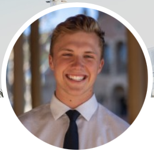

Medical Student · Space Medicine Researcher · Wilderness Medicine

I'm a medical student at the UCLA David Geffen School of Medicine (Class of 2028), currently completing clinical clerkships. Before medical school, I spent nearly two years as a Medical Intern at SpaceX, where I designed the Dragon commercial medical kit and trained astronaut crews for missions including Inspiration4 and Polaris Dawn.
My interests sit at the intersection of medicine, aerospace, and austere environments. I'm passionate about space medicine, wilderness medicine, and trauma surgery — driven by the challenge of delivering exceptional medical care in resource-limited and extreme settings, whether that's low Earth orbit, the backcountry, or a Level I trauma center.
First-author manuscript investigating pharmaceutical production using engineered Bacillus subtilis for autonomous drug manufacturing during deep-space missions. Submitted for publication.
Developed a proposal to SpaceX for direct ICP monitoring during orbital flight to address spaceflight-associated neuro-ocular syndrome (SANS).
Managed on-orbit anti-emetic research for the Inspiration4 mission. Presented findings at the 2022 NASA Human Research Program Investigators' Workshop.
Case report on a fatal aortoesophageal fistula following thoracic endovascular aortic repair. In preparation.
Doctor of Medicine (MD) — Class of 2028
Currently completing clinical clerkships. Rotations in emergency medicine, neurosurgery, trauma surgery, and head & neck surgery. Preparing for USMLE Step examinations.
Class of 2023 · Gold Shield Scholar · UCLA Alumni Scholarship
Varsity skipper on the UCLA Club Sailing team. Student-Alumni Association, coordinating events including Spring Sing 2022.
Created intercollegiate monthly didactics with leaders in aerospace medicine, establishing UCLA as a space medicine hub.
Founded WMIG to address unmet need for austere and limited-resource medicine education. Organizing Wilderness First Responder courses and the Catalina Capstone Course.
Coordinating resource distribution to unhoused communities across Los Angeles.
Whether you're interested in space medicine, research collaboration, or just want to say hello — I'd love to hear from you.